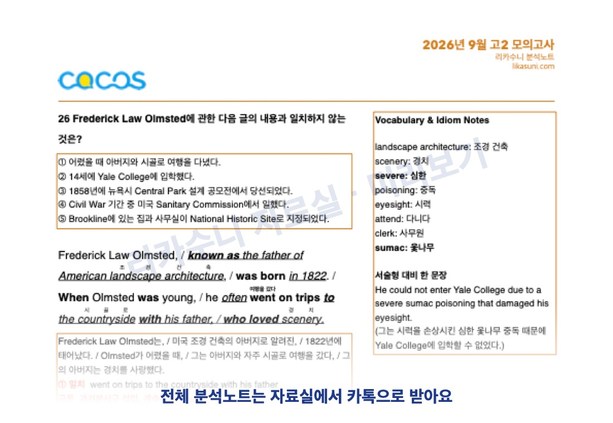

리카수니 분석노트 해설 · 이매동 코코스학원
2026 고2 9모 영어 26번 내용 일치 해설·분석이에요. (2026 9월 고2 영어 모의고사 26번 · 내용 불일치 · Frederick Law Olmsted · 정답 ②)
정답 근거, 선택지 확인 순서, 구문(due to + 명사 · instead of + 동명사 · serve as · designate A as B), 어휘를 정리했고 분석노트 pdf 받는 곳은 글 아래에 있어요.
안녕하세요, 이매동 코코스학원 리카수니 원장입니다.
학생 요청으로 만든 분석노트를 바탕으로 정리했어요. 시험지를 옆에 펴 놓고 보시면 더 잘 보여요.
| 한눈에 보는 정답 · 시험: 2026년 9월 고2 전국연합학력평가 영어 · 번호: 26번 (Frederick Law Olmsted에 관한 글의 내용과 일치하지 않는 것) · 정답: ② 14세에 Yale College에 입학했다. |
'미국 조경 건축의 아버지' Frederick Law Olmsted의 일생을 소개하는 글이에요.
흐름은 어린 시절 아버지와 시골 여행 → 14세에 시력 문제로 대학 입학 못 함 → 1858년 Central Park 공모전 당선 → 남북 전쟁 중 위생 위원회 근무 → 1903년 사망 후 집·사무실이 국가 사적지로 지정이에요.
| · 근거 1: 14세에 Yale College에서 공부할 준비를 했지만, 심한 옻나무 중독으로 시력이 손상돼 입학할 수 없었다고 해요. · 근거 2: 그래서 대학에 다니는 대신 사무원·선원·농부로 일하며 경험을 쌓았다고 이어져요. → '입학했다'는 글과 반대예요. 정답 ②예요. |
· ① 어린 시절 아버지와 시골로 자주 여행을 갔어요. → 일치
· ③ 1858년 Calvert Vaux와 함께 Central Park 설계 공모전에서 당선됐어요. → 일치
· ④ 남북 전쟁 동안 미국 위생 위원회 사무총장으로 일했어요. → 일치
· ⑤ 1979년 Brookline의 집과 사무실이 국가 사적지로 지정됐어요. → 일치
내용 일치 문제는 선택지 순서가 글 순서와 같아요. 연도·나이·숫자 옆 문장을 먼저 찾아 대조하세요.

▲ 2026 고2 9모 영어 26번 내용 일치 해설·분석 pdf 분석노트 미리보기
| 1) due to + 명사 (~ 때문에) / 주격 관계대명사 that → he could not enter due to a severe sumac poisoning that damaged his eyesight (2026년 9월 고2 26번) 2) instead of + 동명사 (attending) / work as ~ (~로 일하다) 3) 과거분사구 삽입 known as ~ (~로 알려진) / 계속적 용법 who 4) serve as ~ (~로 일하다) 5) 양보 although / designate A as B (A를 B로 지정하다) / 목적 to부정사 to honor |
| 영어 | 뜻 |
|---|---|
| landscape architecture | 조경 건축 |
| scenery | 경치 |
| severe | 심한 |
| poisoning | 중독 |
| eyesight | 시력 |
| attend | 다니다 |
| clerk | 사무원 |
| sumac | 옻나무 |
| competition | 공모전 |
| serve as | ~로 일하다 |
| pass away | 세상을 떠나다 |
| successor | 후계자 |
| designate | 지정하다 |
| legacy | 유산 |
| lasting | 오래 남는 |
| 서술형 대비 분석노트에 '서술형 대비 한 문장'(He could not enter Yale College due to a severe sumac poisoning that damaged his eyesight. 그는 시력을 손상시킨 심한 옻나무 중독 때문에 Yale College에 입학할 수 없었다)과 영어 핵심 요약(Core Summary)을 해석과 함께 정리해 두었어요. |
| 📂 2026 고2 9모 영어 분석노트 pdf 받는 법 끊어 읽기·해석·구문·어휘가 정리된 PDF 는 리카수니 자료실 회차 페이지에서 카카오 로그인 후 카톡으로 받을 수 있고, 다른 번호도 요청할 수 있어요. 전과목 문제지·정답 pdf 는 같은 페이지 위쪽 회차 메뉴에서 볼 수 있어요. ▶ 2026년 9월 고2 영어 모의고사 분석노트·변형문제 https://data.likasuni.com/moe/go2/2026-09/eng/ |
Q. 2026 고2 9모 영어 26번 내용 일치 해설·분석 정답은?
A. ② 14세에 Yale College에 입학했다.
Q. 분석노트 pdf 는 어디서 받나요?
A. 리카수니 자료실(data.likasuni.com)에서 카카오 로그인 후 카톡으로 받을 수 있어요. 위 안내의 링크로 이동하세요.
이상 2026 고2 9모 영어 26번 내용 일치 해설·분석 pdf 정리였어요. 궁금한 점은 댓글로 남겨 주세요.
| 🏫 이매동 코코스학원 안내 분당 이매동 코코스학원은 초등·중등·고등 영어와 수학을 가르쳐요. 모의고사·수능특강·내신 대비가 궁금하시면 편하게 문의해 주세요. · 홈페이지: https://www.cocosedu.co.kr/ · 주소: 경기 성남시 분당구 판교로 476 2층 |
#2026고29모영어 #2026고29모영어분석 #고29모영어 #고29모26번 #2026년9월모의고사 #2026년9월고2영어 #9모영어내용일치 #9모영어pdf #내용일치 #FrederickLawOlmsted #영어분석노트 #이매동영어학원 #코코스학원 #리카수니